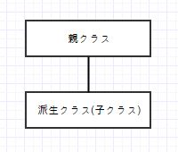
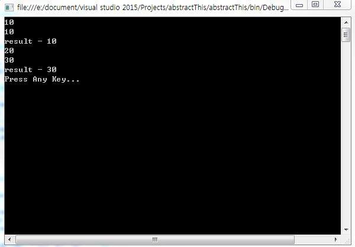
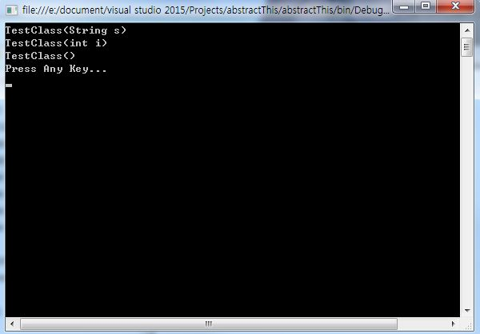
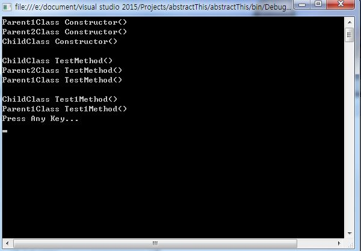
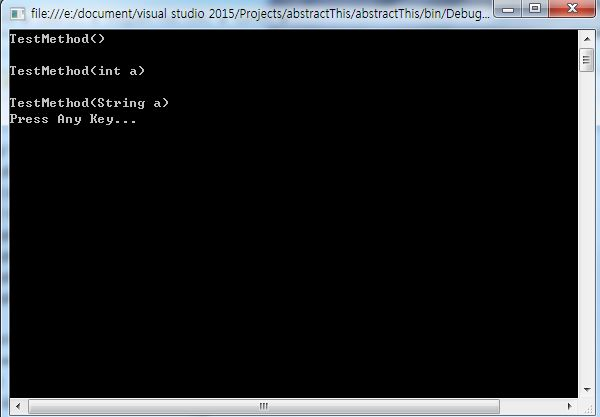

[C#] this、base、ポリモーフィズム( overload (多型) )
こんにちは。明月です。
今日は「this」、「base」、「ポリモーフィズム( overload (多型) )」について勉強します。
前の投稿で継承について勉強したことがあります。継承のことを図で示せば下記とおりです。

上の図を考えながら「this」、「base」を勉強しましょう。
this
プログラムを作成すると多くの変数とメソッドを作ります。その度に変数名とメソッド名を命名するのは大変だと思います。それでクラスの中でメンバ変数あるいはメソッド(コンストラクタ)を同じ名で命名して同じ名の変数とメソッド(コンストラクタ)を「this」にキーワードで見分けして使います。
using System;
using System.Collections.Generic;
using System.Linq;
using System.Text;
using System.Threading.Tasks;
namespace abstractThis
{
public class TestClass
{
private int data = 0;
public int SumData(int data)
{
//buffer変数にパラメタのdata値を格納
int buffer = data;
Console.WriteLine(buffer);
//メンバ変数にbuffer変数の値を格納
this.data += buffer;
Console.WriteLine(this.data);
//メンバ変数の値を返却
return this.data;
}
}
class Program
{
static void Main(string[] args)
{
TestClass test = new TestClass();
int buffer = test.SumData(10);
//TestClass のメンバ変数の値が出力
Console.WriteLine("result - " + buffer);
buffer = test.SumData(20);
//TestClass のメンバ変数の値が出力
Console.WriteLine("result - " + buffer);
Console.WriteLine("Press Any Key...");
Console.ReadLine();
}
}
}
上の例を見るとローカルパラメタの変数名を「data」に命名し、メンバの変数名も「data」に命名しました。 そうするとローカルメソッドの内で「data」名を使うと思えばメンバ変数を使いますかローカルを使いますか？答えは一番近い変数を使います。
すなわち、「data」の変数はローカルパラメタの変数を参照していると言う意味です。改めていうと、「data」はローカルパラメタ「data」を指しているデータだし、「this.data」はメンバ変数の「data」を指しているデータです。

大体的に「this」はメンバ変数か、ローカル変数かを見分けするために使いますが、コンストラクタで他のコンストラクタを呼び出す時も使います。
using System;
using System.Collections.Generic;
using System.Linq;
using System.Text;
using System.Threading.Tasks;
namespace abstractThis
{
public class TestClass
{
//コンストラクタのTestClass(int i)型を呼び出す。
public TestClass() : this(0)
{
//TestClass(int i)型を呼び出した後に実行。
Console.WriteLine("TestClass()");
}
//コンストラクタのTestClass(String s)型を呼び出す。
public TestClass(int i) : this (i.ToString())
{
//TestClass(String s)型を呼び出した後に実行。
Console.WriteLine("TestClass(int i)");
}
public TestClass(String s)
{
Console.WriteLine("TestClass(String s)");
}
}
class Program
{
static void Main(string[] args)
{
//コンストラクタの呼び出し順番 : TestClass(String s) → TestClass(int i) → TestClass()
TestClass test = new TestClass();
Console.WriteLine("Press Any Key...");
Console.ReadLine();
}
}
}

上の例を見ると「Main」メソッドの内で「TestClass()」を割り当ててパラメタがないコンストラクタを呼び出します。コンストラクタの隣を見ると「this(0)」が付けて「int」のパラメタがあるコンストラクタを呼び出します。 また、パラメタが「int」型をコンストラクタは隣の「String」のパラメタがあるコンストラクタを呼び出します。
纏めて順番に並べると「TestClass(String s)」→「TestClass(int i)」→「TestClass()」の順で呼び出します。
Base
「this」はクラスの自分自身を指すと思うと「base」の場合は親クラスを指しているキーワードです。
using System;
using System.Collections.Generic;
using System.Linq;
using System.Text;
using System.Threading.Tasks;
namespace abstractThis
{
//親クラス
public class Parent1Class
{
//コンストラクタ
public Parent1Class()
{
Console.WriteLine("Parent1Class Constructor()");
}
//仮想メソッド
public virtual void TestMethod()
{
Console.WriteLine("Parent1Class TestMethod()");
}
//仮想メソッド
public virtual void Test1Method()
{
Console.WriteLine("Parent1Class Test1Method()");
}
}
//Parent1Classを継承
public class Parent2Class : Parent1Class
{
//コンストラクタを実行する前に親クラス(Parent1Class)のコンストラクタを呼び出す。
public Parent2Class(): base()
{
Console.WriteLine("Parent2Class Constructor()");
}
//親クラス(Parent1Class)のTestMethod()を引き続く。
public override void TestMethod()
{
Console.WriteLine("Parent2Class TestMethod()");
//親クラスのTestMethod()を呼ぶ
base.TestMethod();
}
}
//Parent2Classを継承
public class ChildClass : Parent2Class
{
//コンストラクタを実行する前に親クラス(Parent2Class)のコンストラクタを呼び出す。
public ChildClass(): base()
{
Console.WriteLine("ChildClass Constructor()");
}
//親クラス(Parent2Class)のTestMethod()を引き続く。
public override void TestMethod()
{
Console.WriteLine("ChildClass TestMethod()");
//親クラス(Parent2Class)のTestMethod(int i)を呼ぶ
base.TestMethod();
}
//親クラス(Parent1Class)のTestMethod()を引き続く。(Parent2ClassクラスはTest1Methodのメソッドを再正義してないので)
public override void Test1Method()
{
Console.WriteLine("ChildClass Test1Method()");
//親クラス(Parent1Class)のTest1Method(int i)を呼ぶ
base.Test1Method();
}
}
class Program
{
static void Main(string[] args)
{
//コンストラクタの順番 : Parent1Class → Parent2Class → ChildClass
ChildClass test = new ChildClass();
Console.WriteLine();
//ChildClassのTestMethodメソッドを呼び出す。
test.TestMethod();
Console.WriteLine();
//ChildClassのTest1Methodメソッドを呼び出す。
test.Test1Method();
Console.WriteLine("Press Any Key...");
Console.ReadLine();
}
}
}

上の例を見ると「base」、「this」の意味を確実に知ることになります。まず、コンストラクタの「base」は「this」の自分自身ではなく親クラスのコンストラクタを指していますね。
また、メソッドの中で使った「base」も親クラスのメソッドを指しています。
ポリモーフィズム(多型)
前の投稿で「OOP」の特徴について説明したことがあります。「OOP」の特徴は抽象化、継承、ポリモーフィズム(多型)、カプセルがあります。その中でこれからポリモーフィズム(多型)について勉強します。
既存に勉強したとおりならコンストラクタを作成する時にパラメタだけ変わって作成したことがあります。同様の意味でメソッド名を一致し、パラメタのタイプと個数を見分けて作成することをポリモーフィズム(多型)と言います。
using System;
using System.Collections.Generic;
using System.Linq;
using System.Text;
using System.Threading.Tasks;
namespace abstractThis
{
public class TestClass
{
//ポリモーフィズム(overload)のパラメタがないメソッド
public void TestMethod()
{
Console.WriteLine("TestMethod()");
}
//ポリモーフィズム(overload)のパラメタがint型のメソッド
public void TestMethod(int a)
{
Console.WriteLine("TestMethod(int a)");
}
//ポリモーフィズム(overload)のパラメタがString型のメソッド
public void TestMethod(String a)
{
Console.WriteLine("TestMethod(String a)");
}
}
class Program
{
static void Main(string[] args)
{
TestClass test = new TestClass();
//パラメタがないメソッドを呼出す。
test.TestMethod();
Console.WriteLine();
//パラメタが「int」のメソッドを呼出す。
test.TestMethod(1);
Console.WriteLine();
//パラメタが「String」のメソッドを呼出す。
test.TestMethod("test");
Console.WriteLine("Press Any Key...");
Console.ReadLine();
}
}
}

上の例を見ると「Main」関数から呼ばれる関数名はすべて「TestMethod」です。でも「TestClass」の中で処理するメソッドは違います。
初めのパラメタがないメソッドを呼ばれて「 Console.WriteLine("TestMethod()");」を実行します。２つ目はパラメタが「int」型のメソッドを呼び出します。最後はパラメタ「String」型のメソッドを呼び出します。
上の形のとおりに作成したのをポリモーフィズム(多型)あるいは「overload」と言います。
プログラムのテストを受ければよく出題される問題が「Override」と「Overload」の差です。
- overrideは仮想メソッドあるいは抽象メソッドから再実装することです。
- overloadは多型(ポリモーフィズム)のでパラメタタイプ別で同じメソッド名を定義することです。
「overload」と「override」は見分けが大変なので意味を確実に覚えて行きましょう。
- [C#] Thread(スレッド)2019/07/24 00:57:35
- [C#] 「IDisposable」と「using」2019/07/23 00:05:40
- [C#] ファイルシステム(File System) - FileStream、 Encoding、 Serializable2019/07/22 23:45:05
- [C#] ファイルシステム(File System) - FileInfo,DirectoryInfo2019/07/22 23:30:17
- [C#] MSDN(Microsoft Developer Network)2019/07/22 23:15:42
- [C#] Attribute(アトリビュート)2019/07/20 02:27:23
- [C#] Reflection(リフレクション)2019/07/20 02:22:03
- [C#] Objectタイプ、varタイプ(匿名タイプ)、dynamicタイプ2019/07/18 22:50:16
- [C#] Partial Type(クラス分割)、拡張メソッド2019/07/18 20:22:16
- [C#] Lamda(ラムダ)2019/07/17 23:06:42
- [C#] LINQ(リンク)-3 (Enumerableクラス)2019/07/17 20:57:00
- [C#] LINQ(リンク)-2 (メソッド式)2019/07/16 22:40:03
- [C#] LINQ(リンク)-12019/07/16 20:41:27
- [C#] event(イベント)2019/07/16 00:59:34
- [C#] delegate(デリゲート)2019/07/16 00:48:03
- [C#] 日付フォーマット2020/04/09 20:53:20
- [C#] ログライブラリ(log4net)を設定する方法2020/04/08 13:04:22
- [C#] Zipの圧縮ファイルを解凍するコードを作成する方法2020/04/07 11:17:44
- [C#] Zip圧縮コードを作成する方法2020/04/06 14:56:13
- [C#] 数字フォーマット(お金表示及び小数点以下表示)2020/04/03 00:38:37
- [C#] コマンド(cmd)を実行する方法(Processクラス)2020/03/31 07:15:40
- [C#] FTPに接続してファイルダウンロード、アップロードする方法2020/03/27 19:20:14
- [C#] HttpWebRequestを利用してウェブページを読み込みする方法2020/03/27 00:23:19
- [C#] Base64のエンコード、デコードする方法2020/03/26 02:19:50
- [Java] 日付フォーマット(SimpleDateFormat)を使う方法2020/03/25 00:36:53
- [Java] サーブレット(Servlet)の環境でファイルアップロード(プログレスバーでファイルアップロード状態を表示する方法)する方法2020/03/24 00:48:21
- [Java] Spring環境でファイルアップロード(プログレスバーでファイルアップロード状態を表示する方法)する方法2020/03/22 23:15:12
- [Java] FTPに接続してファイルをダウンロード、アップロードする方法(FTPClient)2020/03/20 02:44:36
- [Window] WindowでFTPサーバを構築する方法2020/03/19 03:27:22
- [Java] JSPのSpring環境でschedulerのcronを使う方法2020/03/18 00:24:32